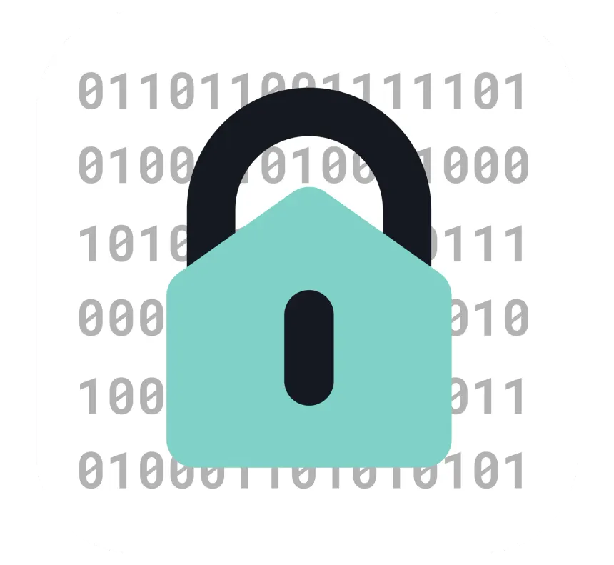

CONFIGURATION EXPOSÉE
[CREDENTIALS FOUND]
Dans le fichier config.php.bak, vous découvrez une clé RSA privée id_rsa appartenant au compte administrateur racine.
Grâce à cette fuite d'information, vous pouvez vous connecter directement en tant que Root.